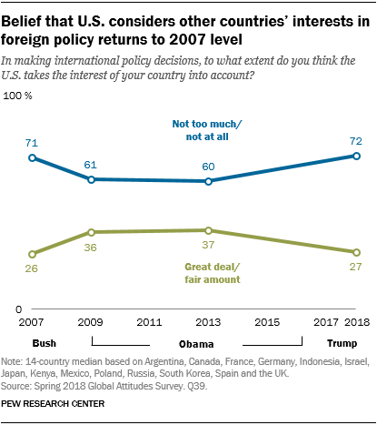
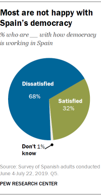
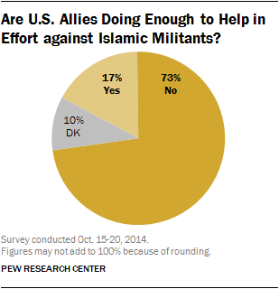
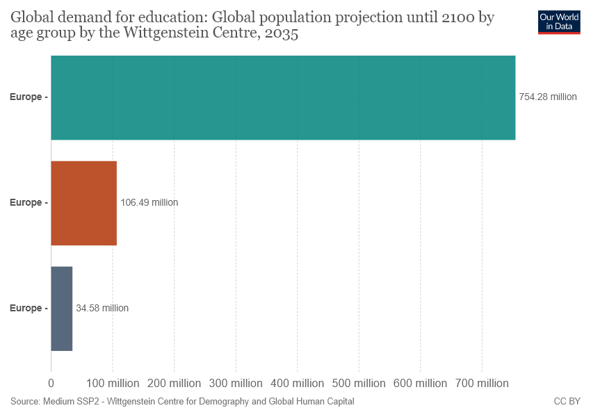
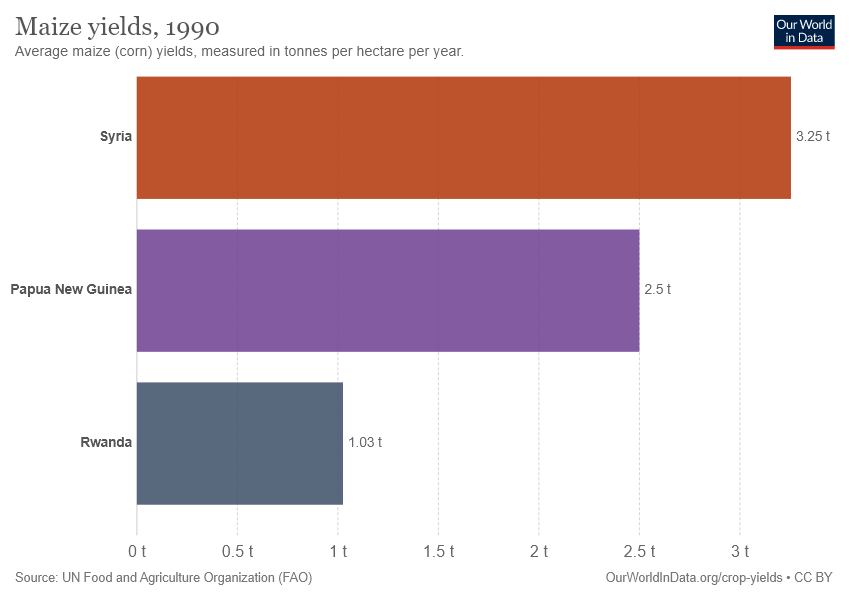
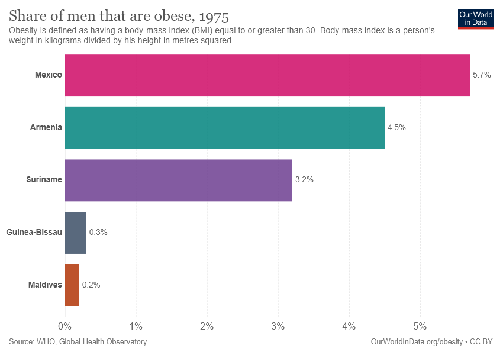

üéØ ChartQA: Examples Where Trained Model Outperforms Base
Total Improved Examples: 72
These are examples where the base model got it wrong, but the trained model got it right!
Example 1 (Dataset Index: 2)

Question: What does the blue line represent?
Ground Truth: Not too much/not at all
❌ Base Model: The blue line represents the percentage of people who believe that the U.S. considers other countries' interests in foreign policy returns to 2007 level.
✅ Trained Model: Not too much/not at all
Example 2 (Dataset Index: 8)

Question: Which answer response has the highest value on this graph?
Ground Truth: Disapprove
❌ Base Model: 53
✅ Trained Model: Disapprove
Example 3 (Dataset Index: 21)

Question: What is the ratio of people who are dissatisfied and satisfied with Spain's democracy?
Ground Truth: 2.125
❌ Base Model: 21:8
✅ Trained Model: 2.09375
Example 4 (Dataset Index: 22)

Question: Is the Pie chart divided into 3 segment?
Ground Truth: Yes
❌ Base Model: No
✅ Trained Model: Yes
Example 5 (Dataset Index: 23)

Question: IS the value of No more then sum of Yes and Dk?
Ground Truth: Yes
❌ Base Model: No
✅ Trained Model: Yes
Example 6 (Dataset Index: 51)

Question: What's the average of two smallest bar?
Ground Truth: 70.535
❌ Base Model: 70.54 million
✅ Trained Model: 70.54
Example 7 (Dataset Index: 56)

Question: What does the value 2122 represent?
Ground Truth: Incidence
❌ Base Model: The value 2122 represents the incidence of multidrug-resistant tuberculosis without extensive drug resistance in Uganda in 2004.
✅ Trained Model: Incidence
Example 8 (Dataset Index: 57)

Question: What is the difference in the value between Incidence and Prevalence?
Ground Truth: 1092
❌ Base Model: The difference in value between Incidence (2,122) and Prevalence (1,030) is 1,092.
✅ Trained Model: 1092
Example 9 (Dataset Index: 59)
Question: Find the average of the percentage value of bars greater than 1?
Ground Truth: 1.608
❌ Base Model: 1.37%
✅ Trained Model: 1.395
Example 10 (Dataset Index: 63)
Question: What is the difference between the largest bar and the smallest bar?
Ground Truth: 1654
❌ Base Model: The difference between the largest bar (Unsafe water source) and the smallest bar (Zinc deficiency) is 1,654.
✅ Trained Model: 1654
Example 11 (Dataset Index: 71)

Question: What is the average of '24 hours' and '48 hours'?
Ground Truth: 105.45
❌ Base Model: 36 hours
✅ Trained Model: 105.05
Example 12 (Dataset Index: 73)
Question: How many times political competition data bigger than political participation?
Ground Truth: 7.02
❌ Base Model: 6.975 times
✅ Trained Model: 7
Example 13 (Dataset Index: 75)
Question: How many times green bar greater than Agriculture bar?
Ground Truth: 8.53
❌ Base Model: 8.57 times
✅ Trained Model: 8.588235294117647
Example 14 (Dataset Index: 77)
Question: What is the average of bottom three bars?
Ground Truth: 38.08
❌ Base Model: 37.5%
✅ Trained Model: 37.586
Example 15 (Dataset Index: 81)
Question: How many times stomach cancer bigger than Kidney cancer data?
Ground Truth: 10.13
❌ Base Model: 10.08 times
✅ Trained Model: 10
Example 16 (Dataset Index: 82)

Question: Which two places mentioned in the chart?
Ground Truth: [Madagascar, Central Europe]
❌ Base Model: Madagascar and Central Europe
✅ Trained Model: [Madagascar, Central Europe]
Example 17 (Dataset Index: 83)
Question: How much times Madagascar greater than Central europe data?
Ground Truth: 32
❌ Base Model: 32 times
✅ Trained Model: 32
Example 18 (Dataset Index: 84)

Question: What is the average maize yield in Syria?
Ground Truth: 3.251
❌ Base Model: 3.25 t
✅ Trained Model: 3.25
Example 19 (Dataset Index: 91)
Question: What is the difference of Sweden and Malta?
Ground Truth: 7.49
❌ Base Model: The death rate from mental health and substance use disorders in 2004 was higher in Malta (12.5 per 100,000) compared to Sweden (5.01 per 100,000).
✅ Trained Model: 7.49
Example 20 (Dataset Index: 93)
Question: What is the sum of largest and smallest bar?
Ground Truth: 159.85
❌ Base Model: 159.87%
✅ Trained Model: 159.85
Example 21 (Dataset Index: 95)
Question: What is the difference between Industry employment percentage in Iran and Kenya??
Ground Truth: 26.38
❌ Base Model: The industry employment percentage in Iran is 34.5%, while in Kenya it is 8.12%. The difference is 26.38%.
✅ Trained Model: 26.38
Example 22 (Dataset Index: 108)

Question: What is the color of Mexico bar?
Ground Truth: Pink
❌ Base Model: The color of the Mexico bar is pink.
✅ Trained Model: Pink
Example 23 (Dataset Index: 113)
Question: What is the average of smallest two bars?
Ground Truth: 13
❌ Base Model: 16%
✅ Trained Model: 13
Example 24 (Dataset Index: 119)
Question: What is difference of value of Paddy rice and Wheat?
Ground Truth: 6.5
❌ Base Model: The difference in the share of CO2 emissions attributed to paddy rice (7.3%) and wheat (0.8%) is 6.5%.
✅ Trained Model: 6.5
Example 25 (Dataset Index: 121)
Question: What the difference in value between Asia and Caribbean?
Ground Truth: 1.18
❌ Base Model: The difference in protein supply per person per day between Asia and the Caribbean is 1.18 grams (61.21 g - 60.03 g).
✅ Trained Model: 1.18
Example 26 (Dataset Index: 122)
Question: What is the death rate from drug use disorders in Thailand?
Ground Truth: 0.77
❌ Base Model: 0.77 per 100,000 individuals
✅ Trained Model: 0.77
Example 27 (Dataset Index: 124)

Question: What is the number of undernourished people in Southern Asia as of 2000 ( in millions)?
Ground Truth: 264.5
❌ Base Model: 264.5 million
✅ Trained Model: 264.5
Example 28 (Dataset Index: 125)
Question: What is the sum of undernourished people in Low Income economies and Sub-Saharan Africa combined (in millions)?
Ground Truth: 341.9
❌ Base Model: 341.9 million
✅ Trained Model: 341.9
Example 29 (Dataset Index: 127)
Question: Does the Saudi Arabia and Australasia has same value ?
Ground Truth: No
❌ Base Model: No, they do not have the same value. Saudi Arabia has 10,427 neonatal deaths, while Australasia has 1,086.
✅ Trained Model: No
Example 30 (Dataset Index: 131)
Question: What is the difference of value between Malaysia and Barbados?
Ground Truth: 10.18
❌ Base Model: 10.13%
✅ Trained Model: 10.12
Example 31 (Dataset Index: 141)
Question: How many times Tanzania data bigger than Ethiopia data ?
Ground Truth: 3.5
❌ Base Model: 3.54 times
✅ Trained Model: 3.58
Example 32 (Dataset Index: 143)
Question: Does the difference of iDA only and Upper middle income is equal to the value of smallest bar?
Ground Truth: No
❌ Base Model: No. The difference between "IDA only" (2.36%) and "Upper middle income" (1.87%) is 0.49%, which is not equal to the value of the smallest bar, which is 0.96%.
✅ Trained Model: No
Example 33 (Dataset Index: 145)
Question: What is the difference in Green and Purple bar?
Ground Truth: 5
❌ Base Model: The Green bar (United States) shows 81.5 kg of pig meat per animal, while the Purple bar (Canada) shows 76.5 kg. The difference is 5 kg.
✅ Trained Model: 5.4
Example 34 (Dataset Index: 156)
Question: In chart Middle bar represents what ?
Ground Truth: Madagascar
❌ Base Model: The Middle bar represents Madagascar with 1.51% of the population having an alcohol use disorder in 2000.
✅ Trained Model: Madagascar
Example 35 (Dataset Index: 160)
Question: What is the color of the shortest bar?
Ground Truth: Gray
❌ Base Model: Dark blue
✅ Trained Model: gray
Example 36 (Dataset Index: 162)
Question: How many lines are shown in the chart?
Ground Truth: 6
❌ Base Model: 5
✅ Trained Model: 6
Example 37 (Dataset Index: 172)
Question: Which two countries are being compared in the given line graph?
Ground Truth: [Africa, Northern America]
❌ Base Model: Africa and Northern America
✅ Trained Model: [Africa, Northern America]
Example 38 (Dataset Index: 174)
Question: What does Orange line represents?
Ground Truth: Urban
❌ Base Model: Urban areas.
✅ Trained Model: Urban
Example 39 (Dataset Index: 175)

Question: What's the difference in the value of highest percentage value given in the chart and the percentage points where two lines cross?
Ground Truth: 0.3
❌ Base Model: The highest percentage value on the chart is 80% for urban areas in 2050. The two lines (urban and rural) cross around 1975, where the urban line reaches approximately 50%. The difference between these values is 30 percentage points.
✅ Trained Model: 0.35
Example 40 (Dataset Index: 177)
Question: In how many years the share of youth not in education is more than 20 %?
Ground Truth: 4
❌ Base Model: 7 years
✅ Trained Model: 4
Example 41 (Dataset Index: 181)
Question: Which among Red and Grey bar has the highest value in the year 2000?
Ground Truth: Red
❌ Base Model: Red bar (15-17 years)
✅ Trained Model: Red
Example 42 (Dataset Index: 190)
Question: How many regions have more than 60 % proportions that applied for accreditation?
Ground Truth: 1
❌ Base Model: 2
✅ Trained Model: 1
Example 43 (Dataset Index: 203)
Question: what is the difference in Alcohol and drug use disorders in Tajikistan between 2000 and 2009?
Ground Truth: 0.005
❌ Base Model: The alcohol and drug use disorder burden in Tajikistan increased from approximately 1% in 2000 to about 1.5% in 2009.
✅ Trained Model: 0.4
Example 44 (Dataset Index: 220)
Question: Is the starting value of the red graph the lowest value?
Ground Truth: Yes
❌ Base Model: No
✅ Trained Model: Yes
Example 45 (Dataset Index: 254)
Question: Is the crude oil import price greater than 25$/barrel in 1984?
Ground Truth: Yes
❌ Base Model: No
✅ Trained Model: Yes
Example 46 (Dataset Index: 257)
Question: What's the ratio of Trump voters who are against Biden and Biden voters who are for Biden?
Ground Truth: 0.340972222
❌ Base Model: The ratio is 24:33 or approximately 0.73:1.
✅ Trained Model: 0.3125
Example 47 (Dataset Index: 267)
Question: What's the median value of the green bars?
Ground Truth: 19
❌ Base Model: 59
✅ Trained Model: 19
Example 48 (Dataset Index: 272)
Question: What is youtube Trust data?
Ground Truth: 17
❌ Base Model: The chart shows that 17% of U.S. adults trust YouTube as a place to get political and election news, while 36% distrust it.
✅ Trained Model: 17
Example 49 (Dataset Index: 278)
Question: which color shows As in the bar?
Ground Truth: gray
❌ Base Model: The color that shows "As" in the bar is gray.
✅ Trained Model: gray
Example 50 (Dataset Index: 287)
Question: What is the Ration of Somewhat in West Germany and East Germany?
Ground Truth: 1.393055556
❌ Base Model: The ratio of "Somewhat" important in religion for those living in West Germany to those living in East Germany is approximately 1.27:1 (33% in West Germany vs. 26% in East Germany).
✅ Trained Model: 1.2692307692307692
Example 51 (Dataset Index: 291)
Question: What's the difference in the value of the total number of persons who want to improve the way government works and who have not?
Ground Truth: 33
❌ Base Model: The difference is 33% (those who say Trump has definitely or probably improved the way government works) compared to 66% (those who say he has not).
✅ Trained Model: 33
Example 52 (Dataset Index: 314)
Question: Which county plays the least important role in the world than it did 10 years ago?
Ground Truth: UK
❌ Base Model: The UK plays the least important role in the world than it did 10 years ago according to the chart.
✅ Trained Model: UK
Example 53 (Dataset Index: 318)
Question: What's the color of the Rightmost bar?
Ground Truth: Green
❌ Base Model: The color of the rightmost bar is green.
✅ Trained Model: Green
Example 54 (Dataset Index: 331)
Question: What is the ratio of people who have confidence in President Trump and those who don't in Venezuela?
Ground Truth: 0.884722222
❌ Base Model: The ratio of people who have confidence in President Trump to those who don't in Venezuela is 20% to 74%, or approximately 1:3.7.
✅ Trained Model: 1.243055556
Example 55 (Dataset Index: 333)
Question: Is the sum of Bachelors more than the sum of Women?
Ground Truth: Yes
❌ Base Model: No
✅ Trained Model: Yes
Example 56 (Dataset Index: 335)
Question: How many times good is more than bad in General Public?
Ground Truth: 2.62
❌ Base Model: 2.56 times
✅ Trained Model: 2.6153846153846154
Example 57 (Dataset Index: 362)
Question: Which two country is compared here?
Ground Truth: [Czech Republic, New Zealand]
❌ Base Model: Czech Republic and New Zealand
✅ Trained Model: [Czech Republic, New Zealand]
Example 58 (Dataset Index: 373)
Question: What is the average of all the three bars?
Ground Truth: 8.3
❌ Base Model: 8.3k
✅ Trained Model: 8.3
Example 59 (Dataset Index: 377)
Question: What is the difference in Inward FDI stocks between Spain and Poland?
Ground Truth: 0.42
❌ Base Model: The difference in Inward FDI stocks between Spain and Poland is 0.42 million US dollars (0.65M - 0.23M).
✅ Trained Model: 0.36
Example 60 (Dataset Index: 391)
Question: What's the difference between two bars?
Ground Truth: 0.044
❌ Base Model: The blue bar (Argentina) is higher than the red bar (Russia), indicating a higher percentage of GDP spent on early childhood education in Argentina compared to Russia in 2012.
✅ Trained Model: 0.044
Example 61 (Dataset Index: 409)
Question: What is the ratio between Mostly good and Mostly bad in Democrat Feb 2015?
Ground Truth: 3.22222
❌ Base Model: 3:1
✅ Trained Model: 3.25
Example 62 (Dataset Index: 413)
Question: What is the average of coffee yields by Congo and Cameroon?
Ground Truth: 0.51
❌ Base Model: 0.53 t
✅ Trained Model: 0.525
Example 63 (Dataset Index: 423)
Question: What is the total value of two least bar?
Ground Truth: 20.34
❌ Base Model: 20.36%
✅ Trained Model: 20.36
Example 64 (Dataset Index: 431)
Question: How many countries have more than 40k enterprises over the given years?
Ground Truth: 2
❌ Base Model: 1
✅ Trained Model: 2
Example 65 (Dataset Index: 439)
Question: Is the median value of Slovenia data points greater than 40?
Ground Truth: Yes
❌ Base Model: No
✅ Trained Model: Yes
Example 66 (Dataset Index: 445)
Question: What is the difference between the highest value and lowest value of switzerland?
Ground Truth: 4
❌ Base Model: The difference between the highest value (18) and the lowest value (14) for Switzerland is 4 years.
✅ Trained Model: 4.2
Example 67 (Dataset Index: 466)

Question: How many distribution are there in the pie chart?
Ground Truth: 8
❌ Base Model: 10
✅ Trained Model: 8
Example 68 (Dataset Index: 475)
Question: What is the ratio between KFC vs Taco Bell?
Ground Truth: 2.623
❌ Base Model: The ratio of KFC to Taco Bell is approximately 2.63:1.
✅ Trained Model: 2.61
Example 69 (Dataset Index: 477)
Question: Are the sum of NSW Technology and TFK Group segment greater than 50%?
Ground Truth: Yes
❌ Base Model: No
✅ Trained Model: Yes
Example 70 (Dataset Index: 489)
Question: What is the difference between the two products?
Ground Truth: 64
❌ Base Model: Jewelry makes up 82% while Watches make up 18%.
✅ Trained Model: 64
Example 71 (Dataset Index: 495)
Question: What is the difference between Home Furnishings and Domestics merchandise as a share of Bed Bath & Beyond sales worldwide in the year 2020?
Ground Truth: 31
❌ Base Model: Home furnishings accounted for 65% of Bed Bath & Beyond's sales, while domestics merchandise made up 34%.
✅ Trained Model: 31.4
Example 72 (Dataset Index: 497)
Question: What's the sum of conditions that have more weights than expected?
Ground Truth: 55.8
❌ Base Model: 55%
✅ Trained Model: 55.8